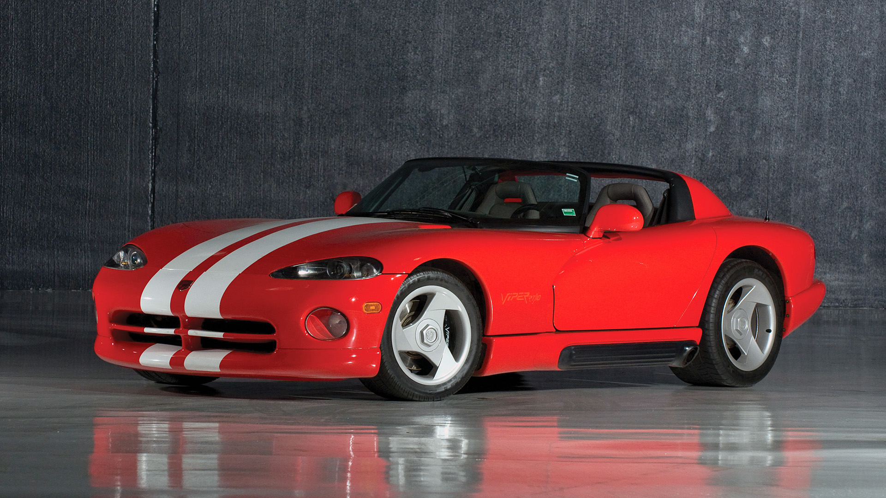
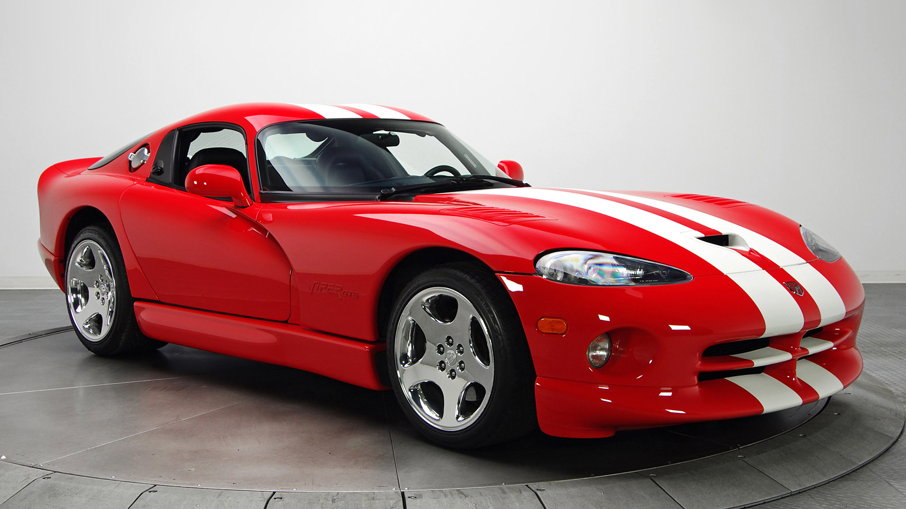
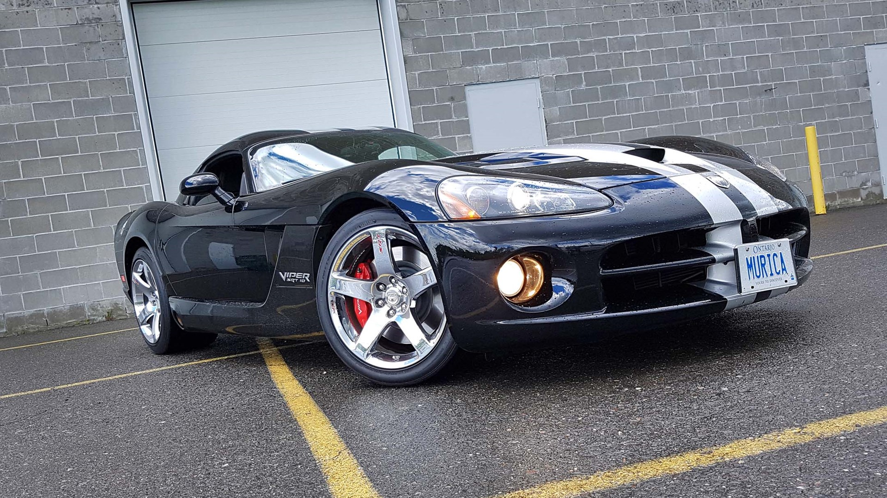
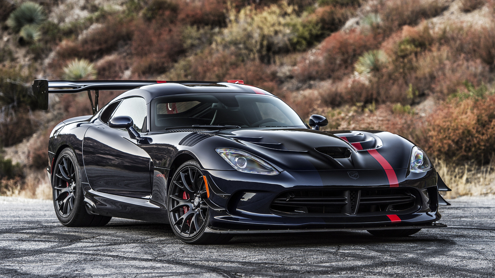

Viper
Bakgrunn
Viper er ein amerikansk klassikar med relativ kort bakgrunn i forhald til dei andre legendene. Modellen var bygd for fart og råskap. Den første modellen rulla ut av fabrikken for berre 26 år sidan. Viperen skilde seg ut både i design og effekt. Det er den kjende produsenten Dodge som produsera Viperen. Dei har også produsert Ram, ein meget god pickup-truck.
LOGO
Viktige periodar
1992-1995

Den aller første Viperen blei sett i produksjon i 1992. Prototypen til Viper blei testa allereide i 1989, men dei måtte ha nokre fleire år for å rette opp i enkelte feil. Då bilen var klar, kom den med ein V10-motor på 8 liter, og med heile 400 hestekrefter. Toppfarten var ca. 264km/t.
1996-2002

Den andre generasjonen fekk eit løft i både effekt og design. No hadde den 450 hestekrefter og ein toppfart på 299km/t, 35km/t raskare enn fogjengaren. Denne generasjonen kom også til Europa.
2003-2007

Den tredje generasjonen fekk den største oppgraderinga av dei alle. No fekk den store endringar i utsjånad og mekanikk. Motorvolumet blei oppgradert til 8,3 liter, og effekten blei til 504 hestekrefter med eit dreiemoment på 711 Nm.
2019

Dagens Viper har 645 hestekrefter med eit dreiemoment på 813 Nm. Den kostar om trent 3 millionar norske kroner. Viper er eit amerikansk ikon som lev vidare.